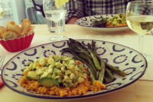

Sign up for our newsletter to receive selection of the best stories, recipes, and news, delivered weekly to your inbox.

2012’s Best Summer Cookbooks
With the best of the season coming from “orchards, farms and gardens,” NPR has put together an impressive collection of 10 summer cookbooks.

How to Make Vegetable Chips
About a month ago, I ate almost an entire box of kale chips. My brother and I were visiting our cousin in Brooklyn, and before a very thoughtfully prepared vegan…

Recipes from a Sunday Supper
I could not figure out what to do with the delectable slices of Pear Cake that I brought home from this wonderful Sunday supper - eat them slowly, a little bit at…
LATEST TWEET
Join the ConvrtionLET'S BE FRIENDS!
For weekly finds,
Join the Communtycommunity recommendations,
and more,
like us on Facebook.